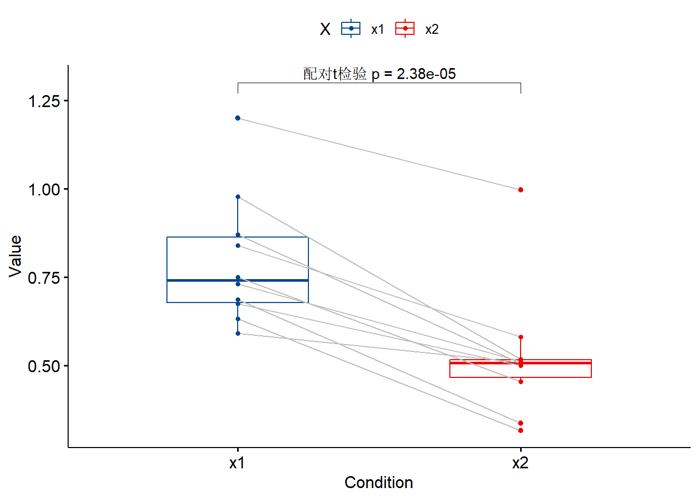
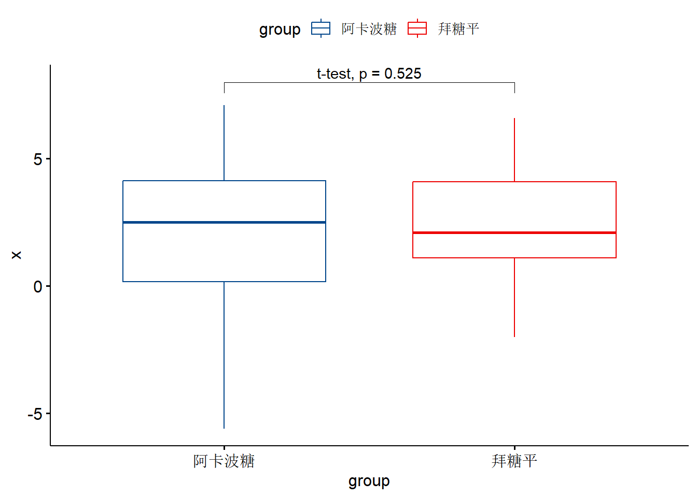
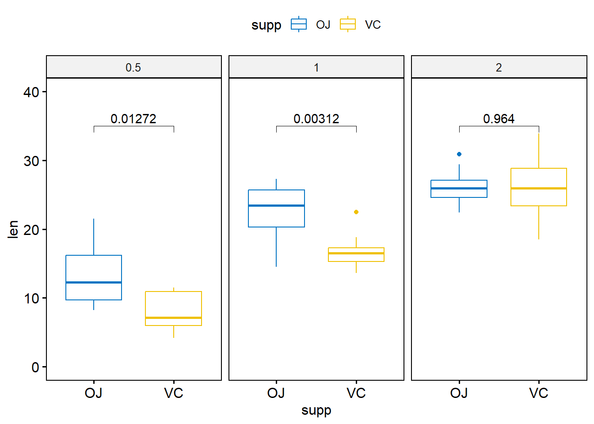
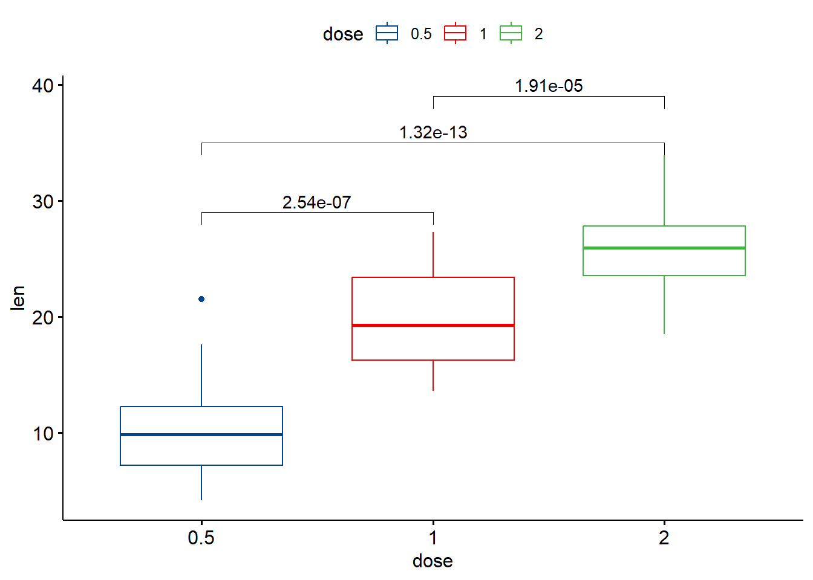
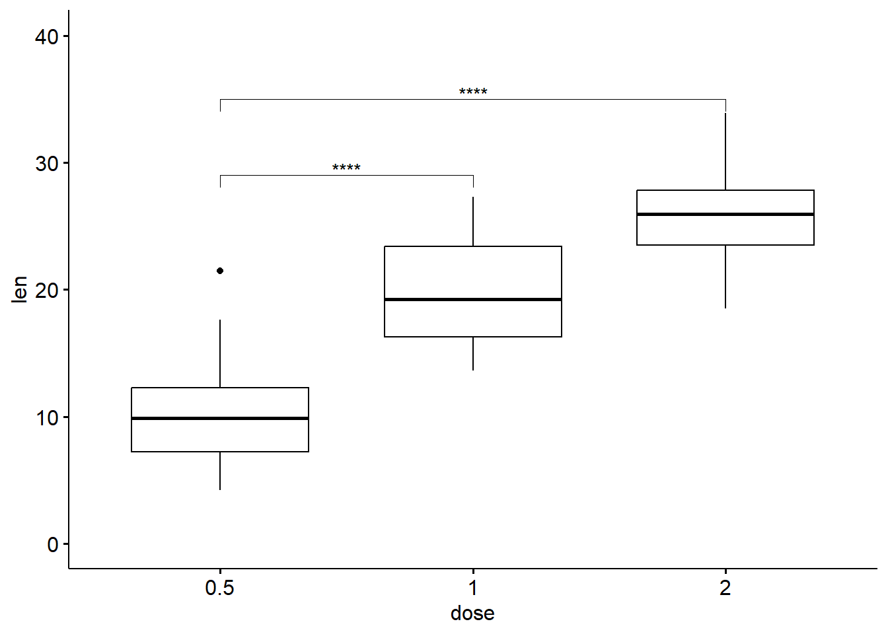
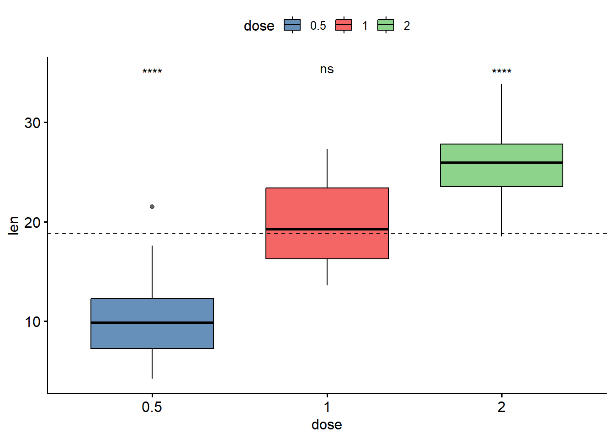
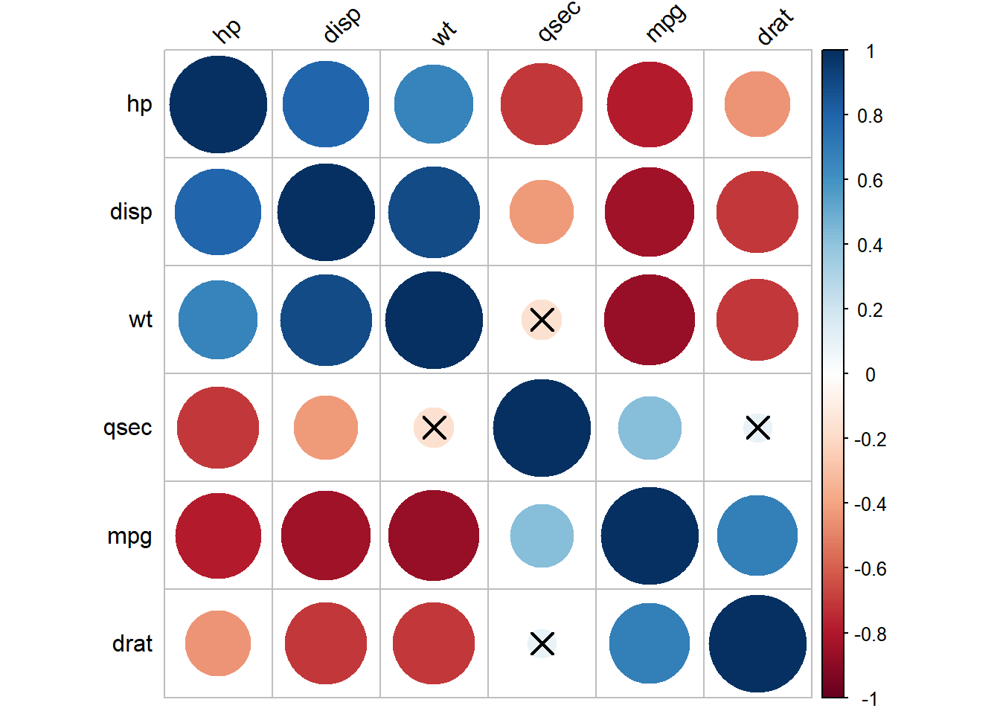

13 R语言tidy风格医学统计学
上面的介绍多数是基于R语言自带的函数进行医学统计学分析，下面介绍一个比较现代化、用法也更加简单直接的方法。
提供一个简单直观的管道友好的框架，与整洁的设计理念一致，用于执行基本的统计检验，包括t检验，Wilcoxon检验，方差分析，Kruskal-Wallis和相关性分析。每个分析的输出会自动转换成一个整洁的数据框架，以方便可视化。
附加功能可用于重塑，重新排序，操作和可视化相关矩阵。功能还包括析因实验的分析，包括重复测量设计、析因设计、正交设计等。
可以计算几个效应大小指标，包括方差分析eta平方，t检验的Cohen’s d和分类变量之间的关联的Cramer’s v。 该软件包包含用于识别单变量和多变量异常值、评估正态性和方差齐性的辅助函数。
13.1 主要函数
13.1.1 描述性统计
get_summary_stat():计算描述性的统计指标；freq_table(): 分类变量的频率表；get_mode(): 众数；identify_outliers(): 使用boxplot鉴别离群值；mahalanobis_distance(): 计算Mahalanobi距离和离群点；shapiro_test()andmshapiro_test(): 正态性检验.
13.1.2 比较均值
t_test(): 单样本、配对样本、独立样本t检验；wilcox_test(): 单样本、配对样本、独立样本秩和检验；sign_test(): 符号检验；anova_test(): 基于car::Anova()改写，可以做：独立测量、重复测量、混合anova；get_anova_test_table(): 从anova_test()提取结果，可自动执行球形检验.；welch_anova_test(): Welch one-Way ANOVA test. 基于stats::oneway.test()改写；kruskal_test(): kruskal-wallis rank sum test；friedman_test(): Friedman rank sum test；get_comparisons(): 创建需要比较的组；get_pvalue_position: 使用ggplot2添加p值时可自动计算添加坐标
13.1.3 增强R中的ANOVA
factorial_design(): 建立因子化的设计，方便使用car::Anova()进行分析，对于重复测量Anova非常有帮助；anova_summary(): 提取美观的Anova检验的结果，包括从car:Anova()或者stats:aov()中，主要结果包含Anova结果表、一般效应量、和一些假设检验，比如球形检验。
13.1.4 事后检验（post-hoc）
tukey_hsd(): tukey post-hoc tests;dunn_test(): 计算Kruskal-Wallis的成对比较；games_howell_test(): Games-Howell test；emmeans_test(): estimated marginal means
13.1.5 比较比例
prop_test(),pairwise_prop_test()androw_wise_prop_test(). Performs one-sample and two-samples z-test of proportions. Wrappers around the R base function prop.test() but have the advantage of performing pairwise and row-wise z-test of two proportions, the post-hoc tests following a significant chi-square test of homogeneity for 2xc and rx2 contingency tables.fisher_test(),pairwise_fisher_test()androw_wise_fisher_test(): Fisher’s exact test for count data. Wrappers around the R base function fisher.test() but have the advantage of performing pairwise and row-wise fisher tests, the post-hoc tests following a significant chi-square test of homogeneity for 2xc and rx2 contingency tables.chisq_test(),pairwise_chisq_gof_test(),pairwise_chisq_test_against_p(): Performs chi-squared tests, including goodness-of-fit, homogeneity and independence tests.binom_test(),pairwise_binom_test(),pairwise_binom_test_against_p(): Performs exact binomial test and pairwise comparisons following a significant exact multinomial test. Alternative to the chi-square test of goodness-of-fit-test when the sample.multinom_test(): performs an exact multinomial test. Alternative to the chi-square test of goodness-of-fit-test when the sample size is small.mcnemar_test(): performs McNemar chi-squared test to compare paired proportions. Provides pairwise comparisons between multiple groups.cochran_qtest(): extension of the McNemar Chi-squared test for comparing more than two paired proportions.prop_trend_test(): Performs chi-squared test for trend in proportion. This test is also known as Cochran-Armitage trend test
13.1.6 比较方差
levene_test(): Pipe-friendly framework to easily compute Levene’s test for homogeneity of variance across groups.box_m(): Box’s M-test for homogeneity of covariance matrices
13.1.7 计算效应量
cohens_d(): Compute cohen’s d measure of effect size for t-tests.wilcox_effsize(): Compute Wilcoxon effect size (r).eta_squared()andpartial_eta_squared(): Compute effect size for ANOVA.kruskal_effsize(): Compute the effect size for Kruskal-Wallis test as the eta squared based on the H-statistic.friedman_effsize(): Compute the effect size of Friedman test using the Kendall’s W value.cramer_v(): Compute Cramer’s V, which measures the strength of the association between categorical variables
13.1.8 相关性分析
13.1.8.1 计算相关性
cor_test(): correlation test between two or more variables using Pearson, Spearman or Kendall methods.cor_mat(): compute correlation matrix with p-values. Returns a data frame containing the matrix of the correlation coefficients. The output has an attribute named “pvalue”, which contains the matrix of the correlation test p-values.cor_get_pval(): extract a correlation matrix p-values from an object of class cor_mat().cor_pmat(): compute the correlation matrix, but returns only the p-values of the correlation tests.as_cor_mat(): convert a cor_test object into a correlation matrix format.
13.1.8.2 重塑相关矩阵
cor_reorder(): reorder correlation matrix, according to the coefficients, using the hierarchical clustering method.cor_gather(): takes a correlation matrix and collapses (or melt) it into long format data frame (paired list)cor_spread(): spread a long correlation data frame into wide format (correlation matrix).
13.1.8.3 相关矩阵取子集
cor_select(): subset a correlation matrix by selecting variables of interest.pull_triangle(),pull_upper_triangle(),pull_lower_triangle(): pull upper and lower triangular parts of a (correlation) matrix.replace_triangle(),replace_upper_triangle(),replace_lower_triangle(): replace upper and lower triangular parts of a (correlation) matrix.
13.1.9 添加P值和显著性标记
adjust_pvalue(): add an adjusted p-values column to a data frame containing statistical test p-valuesadd_significance(): add a column containing the p-value significance levelp_round(),p_format(),p_mark_significant(): rounding and formatting p-values
13.1.10 提取统计信息
get_pwc_label(): Extract label from pairwise comparisons.get_test_label(): Extract label from statistical tests.create_test_label(): Create labels from user specified test results
13.1.11 数据处理辅助函数
df_select(),df_arrange(),df_group_by(): wrappers arround dplyr functions for supporting standard and non standard evaluations.df_nest_by(): Nest a tibble data frame using grouping specification. Supports standard and non standard evaluations.df_split_by(): Split a data frame by groups into subsets or data panel. Very similar to the functiondf_nest_by(). The only difference is that, it adds labels to each data subset. Labels are the combination of the grouping variable levels.df_unite(): Unite multiple columns into one.df_unite_factors(): Unite factor columns. First, order factors levels then merge them into one column. The output column is a factor.df_label_both(),df_label_value(): functions to label data frames rows by by one or multiple grouping variables.df_get_var_names(): Returns user specified variable names. Supports standard and non standard evaluation
13.1.12 其他
doo(): alternative to dplyr::do for doing anything. Technically it usesnest()+mutate()+map()to apply arbitrary computation to a grouped data frame.sample_n_by(): sample n rows by group from a tableconvert_as_factor(),set_ref_level(),reorder_levels(): Provides pipe-friendly functions to convert simultaneously multiple variables into a factor variable.make_clean_names(): Pipe-friendly function to make syntactically valid column names (for input data frame) or names (for input vector).counts_to_cases(): converts a contingency table or a data frame of counts into a data frame of individual observations
13.2 安装和加载
if(!require(devtools)) install.packages("devtools")
devtools::install_github("kassambara/rstatix")
# 或者cran
install.packages("rstatix")加载包：
library(rstatix)
##
## Attaching package: 'rstatix'
## The following object is masked from 'package:stats':
##
## filter
library(ggpubr)
## Loading required package: ggplot213.3 描述性统计
# 指定列
iris %>% get_summary_stats(Sepal.Length, Sepal.Width, type = "full")
## # A tibble: 2 × 13
## variable n min max median q1 q3 iqr mad mean sd se
## <fct> <dbl> <dbl> <dbl> <dbl> <dbl> <dbl> <dbl> <dbl> <dbl> <dbl> <dbl>
## 1 Sepal.Leng… 150 4.3 7.9 5.8 5.1 6.4 1.3 1.04 5.84 0.828 0.068
## 2 Sepal.Width 150 2 4.4 3 2.8 3.3 0.5 0.445 3.06 0.436 0.036
## # … with 1 more variable: ci <dbl># 所有列
iris %>% get_summary_stats(type = "common")
## # A tibble: 4 × 10
## variable n min max median iqr mean sd se ci
## <fct> <dbl> <dbl> <dbl> <dbl> <dbl> <dbl> <dbl> <dbl> <dbl>
## 1 Sepal.Length 150 4.3 7.9 5.8 1.3 5.84 0.828 0.068 0.134
## 2 Sepal.Width 150 2 4.4 3 0.5 3.06 0.436 0.036 0.07
## 3 Petal.Length 150 1 6.9 4.35 3.5 3.76 1.76 0.144 0.285
## 4 Petal.Width 150 0.1 2.5 1.3 1.5 1.20 0.762 0.062 0.123# 分组展示
iris %>% group_by(Species) %>% get_summary_stats(Sepal.Length, type = "mean_sd")
## # A tibble: 3 × 5
## Species variable n mean sd
## <fct> <fct> <dbl> <dbl> <dbl>
## 1 setosa Sepal.Length 50 5.01 0.352
## 2 versicolor Sepal.Length 50 5.94 0.516
## 3 virginica Sepal.Length 50 6.59 0.636# 众数
get_mode(iris$Sepal.Length)
## [1] 513.4 t检验
以t检验为例。
13.4.1 单样本t检验
还是以之前推文中的例3-5的数据：
df <- foreign::read.spss('datasets/例03-05.sav',to.data.frame = T,
reencode = "utf-8")
## re-encoding from utf-8
attributes(df)[4] <- NULL
head(df)
## no hb
## 1 1 112
## 2 2 137
## 3 3 129
## 4 4 126
## 5 5 88
## 6 6 90单样本t检验：
df %>% t_test(hb ~ 1, mu = 140)
## # A tibble: 1 × 7
## .y. group1 group2 n statistic df p
## * <chr> <chr> <chr> <int> <dbl> <dbl> <dbl>
## 1 hb 1 null model 36 -2.14 35 0.0397结果和t.test()一样哦！
13.4.2 配对t检验
使用之前推文中的例3-6数据：
library(foreign)
df <- foreign::read.spss('datasets/例03-06.sav',to.data.frame = T,
reencode = "utf-8")
## re-encoding from utf-8
attributes(df)[4] <- NULL
head(df)
## no x1 x2
## 1 1 0.840 0.580
## 2 2 0.591 0.509
## 3 3 0.674 0.500
## 4 4 0.632 0.316
## 5 5 0.687 0.337
## 6 6 0.978 0.517进行配对样本t检验：
library(tidyr)
st <- df %>% pivot_longer(cols = 2:3, names_to = "X", values_to = "values") %>%
t_test(values ~ X, paired = T)
st
## # A tibble: 1 × 8
## .y. group1 group2 n1 n2 statistic df p
## * <chr> <chr> <chr> <int> <int> <dbl> <dbl> <dbl>
## 1 values x1 x2 10 10 7.93 9 0.0000238结果和t.test()也是一样的哦！
可视化也可直接完成！
df %>% pivot_longer(cols = 2:3, names_to = "X", values_to = "values") %>%
ggpaired(x="X",y="values",color = "X",id="no",line.size = 0.5,line.color = "grey",palette = "lancet")+
stat_pvalue_manual(st,label = "配对t检验 p = {p}",y.position = 1.3)
13.4.3 两样本t检验
使用之前推文中的例3-8的数据
df <- foreign::read.spss('datasets/例03-07.sav',to.data.frame = T)
df$group <- c(rep('阿卡波糖',20),rep('拜糖平',20))
attributes(df)[3] <- NULL
head(df)
## no x group
## 1 1 -0.7 阿卡波糖
## 2 2 -5.6 阿卡波糖
## 3 3 2.0 阿卡波糖
## 4 4 2.8 阿卡波糖
## 5 5 0.7 阿卡波糖
## 6 6 3.5 阿卡波糖进行独立样本t检验：
dt <- df %>% t_test(x ~ group, paired = F)
dt
## # A tibble: 1 × 8
## .y. group1 group2 n1 n2 statistic df p
## * <chr> <chr> <chr> <int> <int> <dbl> <dbl> <dbl>
## 1 x 阿卡波糖 拜糖平 20 20 -0.642 36.1 0.525和自带的结果是一样的哦！
顺便可视化一起做了：
ggboxplot(df, x="group", y="x",color = "group", palette = "lancet")+
stat_pvalue_manual(dt, label = "t-test, p = {p}",y.position = 8)
13.4.4 分组后进行比较
df <- ToothGrowth
df$dose <- as.factor(df$dose)
head(df)
## len supp dose
## 1 4.2 VC 0.5
## 2 11.5 VC 0.5
## 3 7.3 VC 0.5
## 4 5.8 VC 0.5
## 5 6.4 VC 0.5
## 6 10.0 VC 0.5stat.test <- df %>%
group_by(dose) %>%
t_test(len ~ supp) %>%
adjust_pvalue() %>%
add_significance("p.adj")
stat.test
## # A tibble: 3 × 11
## dose .y. group1 group2 n1 n2 statistic df p p.adj p.adj.…¹
## <fct> <chr> <chr> <chr> <int> <int> <dbl> <dbl> <dbl> <dbl> <chr>
## 1 0.5 len OJ VC 10 10 3.17 15.0 0.00636 0.0127 *
## 2 1 len OJ VC 10 10 4.03 15.4 0.00104 0.00312 **
## 3 2 len OJ VC 10 10 -0.0461 14.0 0.964 0.964 ns
## # … with abbreviated variable name ¹p.adj.signifggboxplot(
df, x = "supp", y = "len",
color = "supp", palette = "jco", facet.by = "dose",
ylim = c(0, 40)
) +
stat_pvalue_manual(stat.test, label = "p.adj", y.position = 35)
13.4.5 多组间的两两比较
如果有大于2个分组，会自动进行两两比较。
# 两两之间做t检验，自动完成
pairwise.test <- df %>% t_test(len ~ dose)
pairwise.test
## # A tibble: 3 × 10
## .y. group1 group2 n1 n2 statistic df p p.adj p.adj.signif
## * <chr> <chr> <chr> <int> <int> <dbl> <dbl> <dbl> <dbl> <chr>
## 1 len 0.5 1 20 20 -6.48 38.0 1.27e- 7 2.54e- 7 ****
## 2 len 0.5 2 20 20 -11.8 36.9 4.4 e-14 1.32e-13 ****
## 3 len 1 2 20 20 -4.90 37.1 1.91e- 5 1.91e- 5 ****可视化：
ggboxplot(df, x = "dose", y = "len", color = "dose", palette = "lancet")+
stat_pvalue_manual(
pairwise.test, label = "p.adj",
y.position = c(29, 35, 39)
)
还可以指定和某一个组进行比较：
# T-test: 都和指定的组进行比较
stat.test <- df %>% t_test(len ~ dose, ref.group = "0.5")
stat.test
## # A tibble: 2 × 10
## .y. group1 group2 n1 n2 statistic df p p.adj p.adj.signif
## * <chr> <chr> <chr> <int> <int> <dbl> <dbl> <dbl> <dbl> <chr>
## 1 len 0.5 1 20 20 -6.48 38.0 1.27e- 7 1.27e- 7 ****
## 2 len 0.5 2 20 20 -11.8 36.9 4.4 e-14 8.8 e-14 ****# Box plot
ggboxplot(df, x = "dose", y = "len", ylim = c(0, 40)) +
stat_pvalue_manual(
stat.test, label = "p.adj.signif",
y.position = c(29, 35)
)
和全部数据进行比较：
stat.test <- df %>% t_test(len ~ dose, ref.group = "all")
stat.test
## # A tibble: 3 × 10
## .y. group1 group2 n1 n2 statistic df p p.adj p.adj…¹
## * <chr> <chr> <chr> <int> <int> <dbl> <dbl> <dbl> <dbl> <chr>
## 1 len all 0.5 60 20 5.82 56.4 0.00000029 0.00000087 ****
## 2 len all 1 60 20 -0.660 57.5 0.512 0.512 ns
## 3 len all 2 60 20 -5.61 66.5 0.000000425 0.00000087 ****
## # … with abbreviated variable name ¹p.adj.signifggboxplot(df, x = "dose", y = "len", fill = "dose",
palette = "lancet", alpha = 0.6) +
stat_pvalue_manual(stat.test, label = "p.adj.signif", y.position = 35) +
geom_hline(yintercept = mean(df$len), linetype = 2)
13.5 方差分析
13.5.1 完全随机设计方差分析
使用课本例4-2的数据。
首先是构造数据，本次数据自己从书上摘录。。
trt<-c(rep("group1",30),rep("group2",30),rep("group3",30),rep("group4",30))
weight<-c(3.53,4.59,4.34,2.66,3.59,3.13,3.30,4.04,3.53,3.56,3.85,4.07,1.37,
3.93,2.33,2.98,4.00,3.55,2.64,2.56,3.50,3.25,2.96,4.30,3.52,3.93,
4.19,2.96,4.16,2.59,2.42,3.36,4.32,2.34,2.68,2.95,2.36,2.56,2.52,
2.27,2.98,3.72,2.65,2.22,2.90,1.98,2.63,2.86,2.93,2.17,2.72,1.56,
3.11,1.81,1.77,2.80,3.57,2.97,4.02,2.31,2.86,2.28,2.39,2.28,2.48,
2.28,3.48,2.42,2.41,2.66,3.29,2.70,2.66,3.68,2.65,2.66,2.32,2.61,
3.64,2.58,3.65,3.21,2.23,2.32,2.68,3.04,2.81,3.02,1.97,1.68,0.89,
1.06,1.08,1.27,1.63,1.89,1.31,2.51,1.88,1.41,3.19,1.92,0.94,2.11,
2.81,1.98,1.74,2.16,3.37,2.97,1.69,1.19,2.17,2.28,1.72,2.47,1.02,
2.52,2.10,3.71)
data1<-data.frame(trt,weight)
head(data1)
## trt weight
## 1 group1 3.53
## 2 group1 4.59
## 3 group1 4.34
## 4 group1 2.66
## 5 group1 3.59
## 6 group1 3.13进行完全随机设计资料的方差分析：
data1 %>% anova_test(weight ~ trt)
## ANOVA Table (type II tests)
##
## Effect DFn DFd F p p<.05 ges
## 1 trt 3 116 24.884 1.67e-12 * 0.39213.5.2 随机区组设计资料的方差分析
使用例4-3的数据。
首先是构造数据，本次数据自己从书上摘录。。
weight <- c(0.82,0.65,0.51,0.73,0.54,0.23,0.43,0.34,0.28,0.41,0.21,
0.31,0.68,0.43,0.24)
block <- c(rep(c("1","2","3","4","5"),each=3))
group <- c(rep(c("A","B","C"),5))
data4_4 <- data.frame(weight,block,group)
head(data4_4)
## weight block group
## 1 0.82 1 A
## 2 0.65 1 B
## 3 0.51 1 C
## 4 0.73 2 A
## 5 0.54 2 B
## 6 0.23 2 C数据一共3列，第一列是小白鼠肉瘤重量，第二列是区组因素（5个区组），第三列是分组（一共3组）
进行随机区组设计资料的方差分析：
data4_4 %>% anova_test(weight ~ group + block)
## ANOVA Table (type II tests)
##
## Effect DFn DFd F p p<.05 ges
## 1 group 2 8 11.937 0.004 * 0.749
## 2 block 4 8 5.978 0.016 * 0.74913.5.3 拉丁方设计方差分析
使用课本例4-5的数据。
首先是构造数据，本次数据自己从书上摘录。。
psize <- c(87,75,81,75,84,66,73,81,87,85,64,79,73,73,74,78,73,77,77,68,
69,74,76,73,64,64,72,76,70,81,75,77,82,61,82,61)
drug <- c("C","B","E","D","A","F","B","A","D","C","F","E","F","E","B",
"A","D","C","A","F","C","B","E","D","D","C","F","E","B","A",
"E","D","A","F","C","B")
col_block <- c(rep(1:6,6))
row_block <- c(rep(1:6,each=6))
mydata <- data.frame(psize,drug,col_block,row_block)
mydata$col_block <- factor(mydata$col_block)
mydata$row_block <- factor(mydata$row_block)
str(mydata)
## 'data.frame': 36 obs. of 4 variables:
## $ psize : num 87 75 81 75 84 66 73 81 87 85 ...
## $ drug : chr "C" "B" "E" "D" ...
## $ col_block: Factor w/ 6 levels "1","2","3","4",..: 1 2 3 4 5 6 1 2 3 4 ...
## $ row_block: Factor w/ 6 levels "1","2","3","4",..: 1 1 1 1 1 1 2 2 2 2 ...数据一共4列，第一列是皮肤疱疹大小，第二列是不同药物（处理因素，共5种），第三列是列区组因素，第四列是行区组因素。
进行拉丁方设计的方差分析：
mydata %>% anova_test(psize ~ drug + col_block + row_block)
## ANOVA Table (type II tests)
##
## Effect DFn DFd F p p<.05 ges
## 1 drug 5 20 3.906 0.012 * 0.494
## 2 col_block 5 20 0.500 0.772 0.111
## 3 row_block 5 20 1.466 0.245 0.26813.5.4 两阶段交叉设计资料方差分析
使用课本例4-6的数据。
首先是构造数据，本次数据自己从书上摘录。。
contain <- c(760,770,860,855,568,602,780,800,960,958,940,952,635,650,440,450,
528,530,800,803)
phase <- rep(c("phase_1","phase_2"),10)
type <- c("A","B","B","A","A","B","A","B","B","A","B","A","A","B","B","A",
"A","B","B","A")
testid <- rep(1:10,each=2)
mydata <- data.frame(testid,phase,type,contain)
str(mydata)
## 'data.frame': 20 obs. of 4 variables:
## $ testid : int 1 1 2 2 3 3 4 4 5 5 ...
## $ phase : chr "phase_1" "phase_2" "phase_1" "phase_2" ...
## $ type : chr "A" "B" "B" "A" ...
## $ contain: num 760 770 860 855 568 602 780 800 960 958 ...
mydata$testid <- factor(mydata$testid)数据一共4列，第一列是受试者id，第二列是不同阶段，第三列是测定方法，第四列是测量值。
进行两阶段交叉设计资料方差分析：
mydata %>% anova_test(contain ~ phase + type + testid)
## ANOVA Table (type II tests)
##
## Effect DFn DFd F p p<.05 ges
## 1 phase 1 8 9.925 1.40e-02 * 0.554
## 2 type 1 8 4.019 8.00e-02 0.334
## 3 testid 9 8 1240.195 1.32e-11 * 0.999结果和课本一致！
13.5.5 析因设计资料的方差分析
使用课本例11-1的数据，自己手动摘录：
df11_1 <- data.frame(
x1 = rep(c("外膜缝合","束膜缝合"), each = 10),
x2 = rep(c("缝合1个月","缝合2个月"), each = 5),
y = c(10,10,40,50,10,30,30,70,60,30,10,20,30,50,30,50,50,70,60,30)
)
str(df11_1)
## 'data.frame': 20 obs. of 3 variables:
## $ x1: chr "外膜缝合" "外膜缝合" "外膜缝合" "外膜缝合" ...
## $ x2: chr "缝合1个月" "缝合1个月" "缝合1个月" "缝合1个月" ...
## $ y : num 10 10 40 50 10 30 30 70 60 30 ...数据一共3列，第1列是缝合方法，第2列是时间，第3列是轴突通过率。
进行析因设计资料的方差分析：
df11_1 %>% anova_test(y ~ x1 * x2)
## ANOVA Table (type II tests)
##
## Effect DFn DFd F p p<.05 ges
## 1 x1 1 16 0.600 0.450 0.036
## 2 x2 1 16 8.067 0.012 * 0.335
## 3 x1:x2 1 16 0.067 0.800 0.00413.5.6 正交设计资料的方差分析
使用课本例11-4的数据
df11_4 <- data.frame(
a = rep(c("5度","25度"),each = 4),
b = rep(c(0.5, 5.0), each = 2),
c = c(10, 30),
d = c(6.0, 8.0,8.0,6.0,8.0,6.0,6.0,8.0),
x = c(86,95,91,94,91,96,83,88)
)
df11_4$a <- factor(df11_4$a)
df11_4$b <- factor(df11_4$b)
df11_4$c <- factor(df11_4$c)
df11_4$d <- factor(df11_4$d)
str(df11_4)
## 'data.frame': 8 obs. of 5 variables:
## $ a: Factor w/ 2 levels "25度","5度": 2 2 2 2 1 1 1 1
## $ b: Factor w/ 2 levels "0.5","5": 1 1 2 2 1 1 2 2
## $ c: Factor w/ 2 levels "10","30": 1 2 1 2 1 2 1 2
## $ d: Factor w/ 2 levels "6","8": 1 2 2 1 2 1 1 2
## $ x: num 86 95 91 94 91 96 83 88进行正交设计资料的方差分析：
df11_4 %>% anova_test(x ~ a + b + c + d + a * b)
## ANOVA Table (type II tests)
##
## Effect DFn DFd F p p<.05 ges
## 1 a 1 2 3.2 0.216 0.615
## 2 b 1 2 7.2 0.115 0.783
## 3 c 1 2 24.2 0.039 * 0.924
## 4 d 1 2 1.8 0.312 0.474
## 5 a:b 1 2 20.0 0.047 * 0.90913.5.7 重复测量数据两因素两水平的方差分析
使用课本例12-1的数据，直接读取：
df12_1 <- foreign::read.spss("datasets/12-1.sav", to.data.frame = T)
## re-encoding from CP936
str(df12_1)
## 'data.frame': 20 obs. of 5 variables:
## $ n : num 1 2 3 4 5 6 7 8 9 10 ...
## $ x1 : num 130 124 136 128 122 118 116 138 126 124 ...
## $ x2 : num 114 110 126 116 102 100 98 122 108 106 ...
## $ group: Factor w/ 2 levels "处理组","对照组": 1 1 1 1 1 1 1 1 1 1 ...
## $ d : num 16 14 10 12 20 18 18 16 18 18 ...
## - attr(*, "variable.labels")= Named chr [1:5] "编号" "治疗前血压" "治疗后血压" "组别" ...
## ..- attr(*, "names")= chr [1:5] "n" "x1" "x2" "group" ...
## - attr(*, "codepage")= int 936数据一共5列（第5列是自己算出来的，其实原始数据只有4列），第1 列是编号，第2列是治疗前血压，第3例是治疗后血压，第4列是分组，第5列是血压前后差值。
进行重复测量数据两因素两水平的方差分析前，先把数据转换一下格式：
suppressMessages(library(tidyverse))
df12_11 <-
df12_1[,1:4] %>%
pivot_longer(cols = 2:3,names_to = "time",values_to = "hp") %>%
mutate_if(is.character, as.factor)
df12_11$n <- factor(df12_11$n)
str(df12_11)
## tibble [40 × 4] (S3: tbl_df/tbl/data.frame)
## $ n : Factor w/ 20 levels "1","2","3","4",..: 1 1 2 2 3 3 4 4 5 5 ...
## $ group: Factor w/ 2 levels "处理组","对照组": 1 1 1 1 1 1 1 1 1 1 ...
## $ time : Factor w/ 2 levels "x1","x2": 1 2 1 2 1 2 1 2 1 2 ...
## $ hp : num [1:40] 130 114 124 110 136 126 128 116 122 102 ...进行重复测量数据两因素两水平的方差分析:
hp是因变量，time是测量时间（治疗前和治疗后各测量一次），group是分组因素（两种治疗方法），n是受试者编号
df12_11 %>% anova_test(hp ~ time * group + Error(n/time))
## ANOVA Table (type II tests)
##
## Effect DFn DFd F p p<.05 ges
## 1 group 1 18 1.574 2.26e-01 0.071
## 2 time 1 18 55.008 7.08e-07 * 0.278
## 3 group:time 1 18 18.771 4.01e-04 * 0.116这个结果也是和课本一样的，只不过没有显示组内误差的情况！
13.5.8 重复测量数据两因素多水平的分析
使用课本例12-3的数据，直接读取：
df12_3 <- foreign::read.spss("datasets/例12-03.sav",to.data.frame = T)
str(df12_3)
## 'data.frame': 15 obs. of 7 variables:
## $ No : num 1 2 3 4 5 6 7 8 9 10 ...
## $ group: Factor w/ 3 levels "A","B","C": 1 1 1 1 1 2 2 2 2 2 ...
## $ t0 : num 120 118 119 121 127 121 122 128 117 118 ...
## $ t1 : num 108 109 112 112 121 120 121 129 115 114 ...
## $ t2 : num 112 115 119 119 127 118 119 126 111 116 ...
## $ t3 : num 120 126 124 126 133 131 129 135 123 123 ...
## $ t4 : num 117 123 118 120 126 137 133 142 131 133 ...
## - attr(*, "variable.labels")= Named chr [1:7] "\xd0\xf2\xba\xc5" "\xd7\xe9\xb1\xf0" "" "" ...
## ..- attr(*, "names")= chr [1:7] "No" "group" "t0" "t1" ...数据一共7列，第1列是患者编号，第2列是诱导方法（3种），第3-7列是5个时间点的血压。
首先转换数据格式：
library(tidyverse)
df12_31 <- df12_3 %>%
pivot_longer(cols = 3:7, names_to = "times", values_to = "hp")
df12_31$No <- factor(df12_31$No)
df12_31$times <- factor(df12_31$times)
str(df12_31)
## tibble [75 × 4] (S3: tbl_df/tbl/data.frame)
## $ No : Factor w/ 15 levels "1","2","3","4",..: 1 1 1 1 1 2 2 2 2 2 ...
## $ group: Factor w/ 3 levels "A","B","C": 1 1 1 1 1 1 1 1 1 1 ...
## $ times: Factor w/ 5 levels "t0","t1","t2",..: 1 2 3 4 5 1 2 3 4 5 ...
## $ hp : num [1:75] 120 108 112 120 117 118 109 115 126 123 ...进行重复测量两因素多水平的方差分析：
df12_31 %>% anova_test(hp ~ times * group + Error(No/(times)))
## ANOVA Table (type II tests)
##
## $ANOVA
## Effect DFn DFd F p p<.05 ges
## 1 group 2 12 5.783 1.70e-02 * 0.430
## 2 times 4 48 106.558 3.02e-23 * 0.659
## 3 group:times 8 48 19.101 1.62e-12 * 0.409
##
## $`Mauchly's Test for Sphericity`
## Effect W p p<.05
## 1 times 0.293 0.178
## 2 group:times 0.293 0.178
##
## $`Sphericity Corrections`
## Effect GGe DF[GG] p[GG] p[GG]<.05 HFe DF[HF] p[HF]
## 1 times 0.679 2.71, 32.58 1.87e-16 * 0.896 3.59, 43.03 4.65e-21
## 2 group:times 0.679 5.43, 32.58 4.26e-09 * 0.896 7.17, 43.03 2.04e-11
## p[HF]<.05
## 1 *
## 2 *这个结果也是和课本一样的，而且直接给出了球形检验的结果！非常方便。
13.6 相关分析
以R语言自带的mtcars数据集为例。
mydata <- mtcars %>%
select(mpg, disp, hp, drat, wt, qsec)
head(mydata)
## mpg disp hp drat wt qsec
## Mazda RX4 21.0 160 110 3.90 2.620 16.46
## Mazda RX4 Wag 21.0 160 110 3.90 2.875 17.02
## Datsun 710 22.8 108 93 3.85 2.320 18.61
## Hornet 4 Drive 21.4 258 110 3.08 3.215 19.44
## Hornet Sportabout 18.7 360 175 3.15 3.440 17.02
## Valiant 18.1 225 105 2.76 3.460 20.2213.6.1 两个变量
mydata %>% cor_test(wt, mpg, method = "pearson")
## # A tibble: 1 × 8
## var1 var2 cor statistic p conf.low conf.high method
## <chr> <chr> <dbl> <dbl> <dbl> <dbl> <dbl> <chr>
## 1 wt mpg -0.87 -9.56 1.29e-10 -0.934 -0.744 Pearson13.6.2 一个变量和其他所有变量
mydata %>% cor_test(mpg, method = "pearson")
## # A tibble: 5 × 8
## var1 var2 cor statistic p conf.low conf.high method
## <chr> <chr> <dbl> <dbl> <dbl> <dbl> <dbl> <chr>
## 1 mpg disp -0.85 -8.75 9.38e-10 -0.923 -0.708 Pearson
## 2 mpg hp -0.78 -6.74 1.79e- 7 -0.885 -0.586 Pearson
## 3 mpg drat 0.68 5.10 1.78e- 5 0.436 0.832 Pearson
## 4 mpg wt -0.87 -9.56 1.29e-10 -0.934 -0.744 Pearson
## 5 mpg qsec 0.42 2.53 1.71e- 2 0.0820 0.670 Pearson13.6.3 所有变量间两两相关性
mydata %>% cor_test(method = "pearson")
## # A tibble: 36 × 8
## var1 var2 cor statistic p conf.low conf.high method
## <chr> <chr> <dbl> <dbl> <dbl> <dbl> <dbl> <chr>
## 1 mpg mpg 1 Inf 0 1 1 Pearson
## 2 mpg disp -0.85 -8.75 9.38e-10 -0.923 -0.708 Pearson
## 3 mpg hp -0.78 -6.74 1.79e- 7 -0.885 -0.586 Pearson
## 4 mpg drat 0.68 5.10 1.78e- 5 0.436 0.832 Pearson
## 5 mpg wt -0.87 -9.56 1.29e-10 -0.934 -0.744 Pearson
## 6 mpg qsec 0.42 2.53 1.71e- 2 0.0820 0.670 Pearson
## 7 disp mpg -0.85 -8.75 9.38e-10 -0.923 -0.708 Pearson
## 8 disp disp 1 Inf 0 1 1 Pearson
## 9 disp hp 0.79 7.08 7.14e- 8 0.611 0.893 Pearson
## 10 disp drat -0.71 -5.53 5.28e- 6 -0.849 -0.481 Pearson
## # … with 26 more rows可以看到所有的输出都是整洁格式的，而且都给出了详细的统计值。
13.6.4 相关矩阵
当然也提供了相关矩阵的方法。
cor.mat <- mydata %>% cor_mat()
cor.mat
## # A tibble: 6 × 7
## rowname mpg disp hp drat wt qsec
## * <chr> <dbl> <dbl> <dbl> <dbl> <dbl> <dbl>
## 1 mpg 1 -0.85 -0.78 0.68 -0.87 0.42
## 2 disp -0.85 1 0.79 -0.71 0.89 -0.43
## 3 hp -0.78 0.79 1 -0.45 0.66 -0.71
## 4 drat 0.68 -0.71 -0.45 1 -0.71 0.091
## 5 wt -0.87 0.89 0.66 -0.71 1 -0.17
## 6 qsec 0.42 -0.43 -0.71 0.091 -0.17 1展示P值矩阵：
cor.mat %>% cor_get_pval()
## # A tibble: 6 × 7
## rowname mpg disp hp drat wt qsec
## <chr> <dbl> <dbl> <dbl> <dbl> <dbl> <dbl>
## 1 mpg 0 9.38e-10 0.000000179 0.0000178 1.29e- 10 0.0171
## 2 disp 9.38e-10 0 0.0000000714 0.00000528 1.22e- 11 0.0131
## 3 hp 1.79e- 7 7.14e- 8 0 0.00999 4.15e- 5 0.00000577
## 4 drat 1.78e- 5 5.28e- 6 0.00999 0 4.78e- 6 0.62
## 5 wt 1.29e-10 1.22e-11 0.0000415 0.00000478 2.27e-236 0.339
## 6 qsec 1.71e- 2 1.31e- 2 0.00000577 0.62 3.39e- 1 0使用*代替p值：
cor.mat %>% cor_as_symbols() %>% pull_lower_triangle()
## rowname mpg disp hp drat wt qsec
## 1 mpg
## 2 disp *
## 3 hp * *
## 4 drat + + .
## 5 wt * * + +
## 6 qsec . . +星号和相关性一起显示：
cor.mat %>% cor_mark_significant()
## rowname mpg disp hp drat wt qsec
## 1 mpg
## 2 disp -0.85****
## 3 hp -0.78**** 0.79****
## 4 drat 0.68**** -0.71**** -0.45**
## 5 wt -0.87**** 0.89**** 0.66**** -0.71****
## 6 qsec 0.42* -0.43* -0.71**** 0.091 -0.17简单的可视化：
cor.mat %>% cor_reorder() %>% cor_plot()
这个图明显是使用corrplot包画出来的，可以直接使用此包画出更好看的图，我的公众号中已有专门介绍corrplot包的推文！